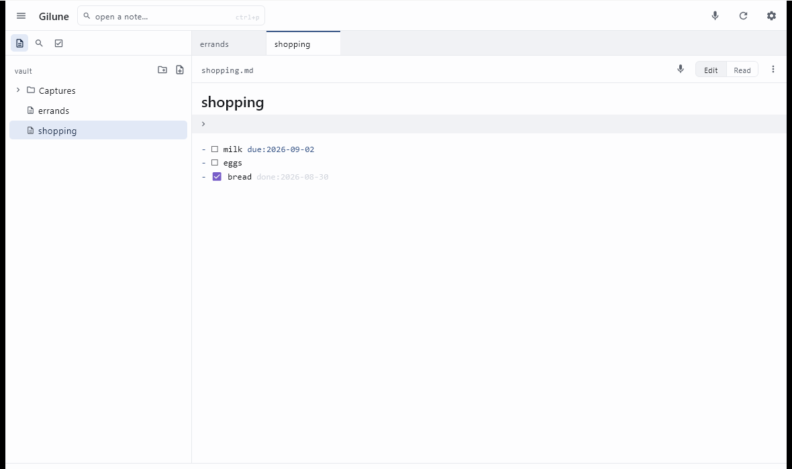

Notes
Every note is one Markdown file in your vault folder. Gilune is a comfortable way to write them, not a place they are locked up.
Making a note
Press Ctrl + N. A note called Untitled appears with its name already selected, so you can simply type the real name over it and carry on into the body. If a folder is selected in the sidebar, the note is made there; otherwise it goes to the top of the vault.
You can also use the new note button at the top of the sidebar, or right-click a folder and choose New note here. To make a folder, use the new folder button beside it or New folder here; you then type the name straight into the tree, with Enter to confirm and Esc to back out.
Naming and renaming
The note's name is the large field at the top of the page — it is the file name, so editing it renames the file. Press Enter to commit, or just click away. Esc puts the old name back. If the note has attachments, they are renamed to match so they stay together.
You can also rename from the sidebar: right-click the note, choose Rename, and type into the tree.
Writing

At the top of the page is a two-way switch, Edit and Read. Notes open in Edit, where Gilune styles your Markdown as you type — headings look like headings, emphasis is emphasised, checkboxes are drawn as boxes. Read shows the same note fully laid out, without a cursor in it.
Styling never changes a single byte. What you are editing is the literal text of the file, dressed up — which is why you can put a note through Gilune, Obsidian and a plain text editor in any order and always get the same file back.
You can set which mode notes open in under Settings ▸ Appearance ▸ Notes open.
Checkboxes
Type - [ ] something to do and it becomes a checkbox you can click.
Clicking one ticks or unticks it and writes the change straight away, without moving
your cursor. Put the cursor on a checkbox line and that line shows its plain Markdown
again, so you can edit the raw text whenever you want it.
Checkboxes are also how tasks work — see the tasks page for due dates and the agenda.
Saving
There is no save button, and you never need one. Gilune writes
the note about a second after you stop typing. Ticking a checkbox saves immediately,
and so does switching to another tab or closing one. The right-hand end of the status
bar says saved or unsaved so you always know where you
stand. If you want to force it, the ⋯ menu at the top of the page
has Save now.
If the file changes underneath you
Because your vault is an ordinary folder, something else may edit a note while you have it open. If that happens to a note with unsaved changes, a banner appears across the top of the page: This note changed on disk while you were editing it. You choose Use the disk version, which takes the other version and drops yours, or Keep mine, which writes yours over it. Nothing is decided for you, and the tab will not close until you answer. If the note had no unsaved changes, Gilune just quietly picks up the new version.
Properties
Notes can carry properties — the key: value lines at the very top of
the file. When a note has any, a small strip sits above the body; click it to see
them all.
To change them, open the ⋯ menu and choose Properties…. Each property is a pair of fields you can edit, with a button to remove it and a blank row at the bottom for adding a new one. Apply keeps your changes, Cancel throws them away.
Gilune's own properties — the ones whose names begin gilune- — are
shown with a padlock and cannot be edited. They are how a note is tied to its
original recording and its history, so the app looks after them. Everything else in
there is yours.
Attachments
When a note has files beside it sharing its name — a voice note's audio recording, for instance — a small arrow appears next to it in the sidebar. Click the arrow to show them; click the note's name as usual to open it. Attachments are listed rather than opened in Gilune: right-click one and choose Reveal in Explorer to get at the file itself.
Deleting
Right-click a note in the sidebar and choose Delete. You will be asked to confirm. The note is removed from your vault — but its earlier versions and, if it came from a recording, the original audio, are kept. Deleting what you can see never destroys what it was made from.
If a note is deleted by something other than Gilune, a banner appears at the top of the window asking whether to keep its history or let it go, with Restore and Delete to answer it.
Using other apps on the same folder
This is expected, not merely tolerated. Point Obsidian at your vault folder, edit a note in Notepad, keep the whole thing in version control — all fine. Gilune picks up outside changes and shows them; the refresh button in the top bar asks it to look again straight away.
The one thing worth knowing is the guard described above: if you edit the same note in two places at once, Gilune will stop and ask you which version to keep rather than silently choosing.